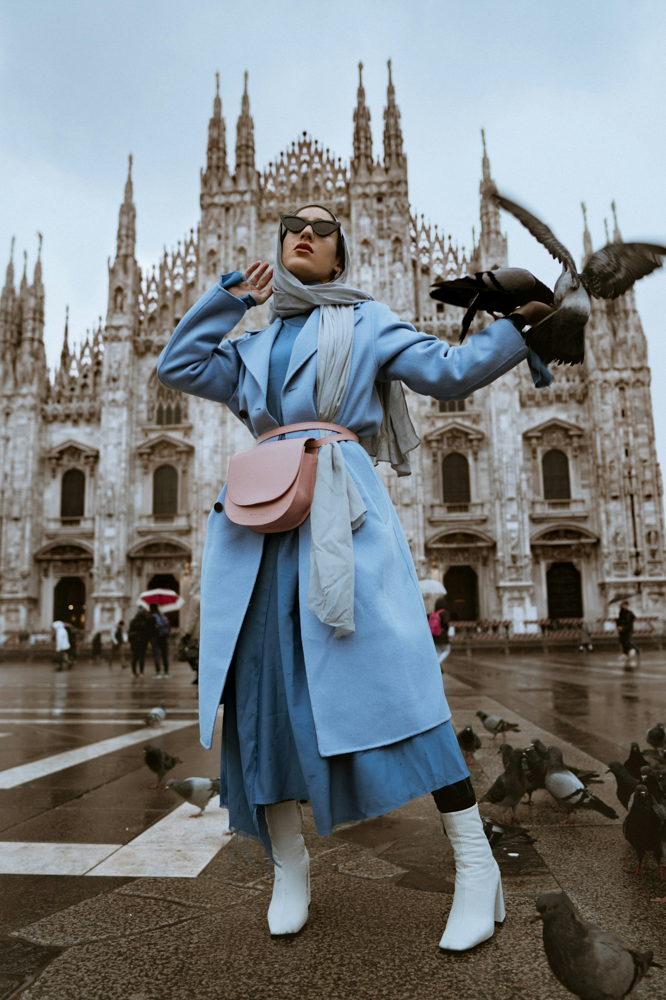
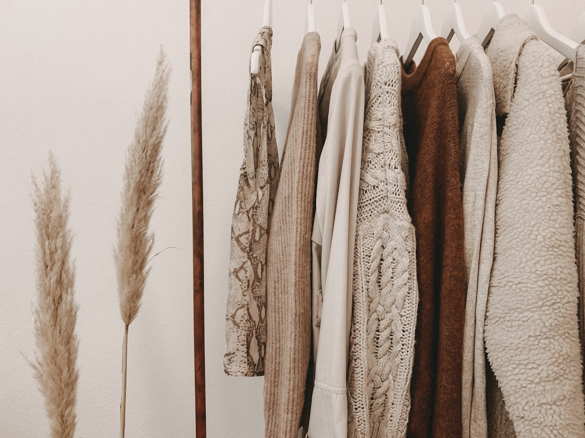

Architectural Form In Kinetic Motion
Moiré Trend Axis investigates the physical boundary between structural architecture and wearable haute couture. Through computational pattern drafting, high-twist silk jacquard interference patterns, and titanium-reinforced internal geometry, we craft garments that reshape human space.
The Science of Moiré Wave Interference
Moiré is not merely a surface ornament; it is a dynamic mathematical phenomenon born from physical grid interference.
When two micro-ribbed textile lattices overlap at fractional angular offsets, light undergoes spatial filtering. The human eye perceives swirling, liquid ripple waves that move across the garment in direct response to the wearer's gait and kinetic velocity.
Our Chelsea atelier collaborates directly with master silk weavers in Como, Italy and Lyon, France to weave bespoke high-twist silk faille and grosgrain with calculated warp thread densities exceeding 120 threads per centimeter. When tailored across sculptural bias geometries, the fabric transforms into an optical kinetic sculpture.
-
◈
Dynamic Light Refraction
Interference waves shift organically under natural sunlight and nocturnal spotlights.
-
◈
Self-Supporting Structural Volumetrics
Internal horsehair canvas and spring titanium stays suspend dramatic cantilevered silhouettes.

Kinetic Moiré Wave Micro-LatticeSculptural Silhouettes & Runway Architecture
Each silhouette represents an exercise in architectural cantilever, mathematical pleating, and uncompromising sartorial craftsmanship.
The Monolith Column Gown
Engineered in high-density wool crepe and watered silk moiré, featuring an exaggerated cantilevered shoulder line and hidden magnetic spine closures.
The Asymmetrical Origami Cocoon
A three-dimensional sculptural overcoat constructed using algorithmic Miura-ori fold geometries that contract and expand dynamically with the body's stride.
The Cantilever Funnel Trench
Sharp geometric funnel collar drafted with internal carbon-fiber ribs, accented by acid chartreuse silk under-facings that flash during rapid movement.

Algorithmic Tessellation MatrixBeyond Two-Dimensional Flat Patterning
Traditional tailoring begins with flat paper patterns that approximate the three-dimensional curves of the body. We begin with non-Euclidean parametric algorithms.
Our atelier utilizes proprietary computational modeling software originally developed for aerospace aerodynamics and tensile membrane architecture. By scanning the client's body in dynamic motion rather than static posture, our patternmakers map lines of non-extension—anatomical vectors across the skin that experience zero stretching during gait.
Seams and structural darts are aligned strictly along these neutral axes. This allows our garments to maintain razor-sharp, monolithic silhouettes without binding the wearer's arms or hiking at the waist during movement.
Loom Craft Meets High-Tensile Filaments
The bedrock of every silhouette is raw fiber integrity. We reject commercial mass-market synthetics in favor of artisanal, high-twist continuous filament silks and extra-fine Merino wools.
In our partner mills, vintage Jacquard looms are modified with custom tension governors that impart differential draw rates to alternate warp sections. This creates micro-ridges along the weft with microscopic height discrepancies of only 0.05 millimeters.
When the finished fabric passes through heavy steel calender rollers under hundreds of tons of hydraulic pressure, the ridges flatten unevenly, permanently locking the hypnotic watered moiré grain into the physical heart of the silk without synthetic coatings or printed pigments.
Engineered Fibers & Sartorial Mediums
Every textile deployed in our collections is formulated to provide sculptural stiffness, fluid kinetic drape, and generational longevity.
Watered Silk Faille (100% Mulberry)
High-density 4-ply organic Mulberry silk woven with deliberate weft variances to generate three-dimensional liquid moiré wave patterns that refract light.
Siberian Horsehair Interfacing
Woven horsehair canvas deployed inside jacket lapels and shoulder cantilevers, providing flexible spring memory that molds permanently to the wearer's anatomy.
Cold-Forged Grade 5 Titanium Stays
Featherweight titanium bone stays integrated into architectural corsetry and collars, offering infinite flex fatigue resistance without adding weight.
The Bespoke Consultation Journey
Acquiring a piece from Moiré Trend Axis is an immersive collaborative commission spanning three distinct appointments at our Chelsea salon.
Phase I: Architectural Anatomical Scan
Comprehensive 54-point ergonomic measurement and dynamic motion analysis to determine your unique posture and shoulder axes.
Phase II: Canvas Toile Fitting
A prototype garment constructed in unbleached Belgian cotton drill is fitted to sculpt and refine balance, pitch, and geometric drape.
Phase III: Moiré Silk Construction
Master artisans hand-stitch the final silk faille, pad-stitching the horsehair canvas and anchoring internal titanium stays.
Phase IV: Final Delivery & Archival Box
The completed commission is presented in a museum-grade archival cedar casket with lifetime tailoring and preservation guarantees.
Perspectives from Global Fashion Critics
What museum curators, collectors, and fashion theorists write regarding our structural textile explorations.
"Moiré Trend Axis has executed what few fashion houses dare attempt: they have made physics wearable. The optical kinetic wave of their silk faille when moving through space is nothing short of hypnotic."
"The craftsmanship inside the jacket lining is as breathtaking as the exterior silhouette. Hand-padded horsehair canvas and cold-forged titanium bones create a garment that feels like tailored armor."
"Commissioning a made-to-measure coat from their Chelsea salon altered my entire relationship with garments. It does not simply fit my body; it commands the architecture of the room."
Frequently Answered Questions
Essential guidance on commissioning bespoke garments, lead times, international delivery, and textile care.
From the initial anatomical scan to final delivery, a bespoke commission typically requires 8 to 12 weeks. This timeline accommodates the bespoke weaving of your selected moiré silk batch, hand-construction of the cotton toile, and over 140 hours of artisanal hand-stitching.
Yes. For our international clientele in London, Paris, Tokyo, and Zurich, our traveling master cutter conducts private trunk fitting salons quarterly. We also facilitate high-resolution 3D lidar body scans conducted by partner tailoring ateliers globally.
Authentic moiré silk faille must never be subjected to conventional industrial steam presses or dry-cleaning solvents, which can disrupt the calendered grain alignment. We provide lifetime maintenance and specialized museum-grade steam conservation directly through our New York atelier.
Bespoke tailored jackets begin at $4,800, while multi-layered architectural coats and evening monolith gowns range between $8,500 and $18,000, reflective of the hundreds of hand-hours, precious silk yardage, and titanium hardware required.
Step Inside The Architectural Axis
Appointments at our Chelsea Arts District atelier are strictly limited to ensure uncompromising personal attention from our master tailoring brigade.